一つの固定空間で、Original v25・Glass edition・Metal editionを切り替える改修候補。表示名は操作上の識別名で、正式題名は未決です。
1500×1800、256 samples、時刻1.2秒。3版で空間、照明、World、カメラ、露出は共通。
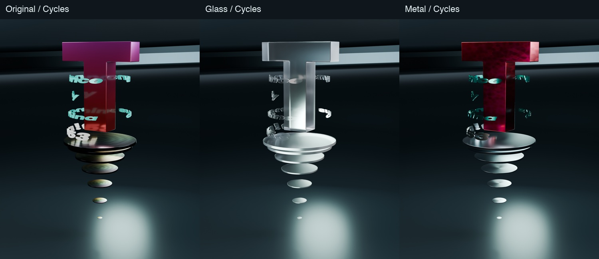
1000×1200、時刻1.2秒、同じカメラ。CyclesとWebの描画方式は異なります。
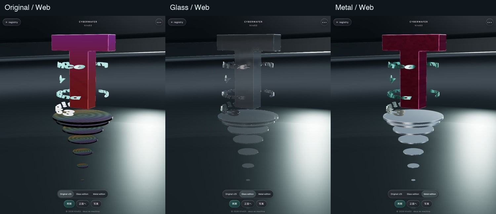
390×844のChromium表示。iPhone／Safari実機ではありません。
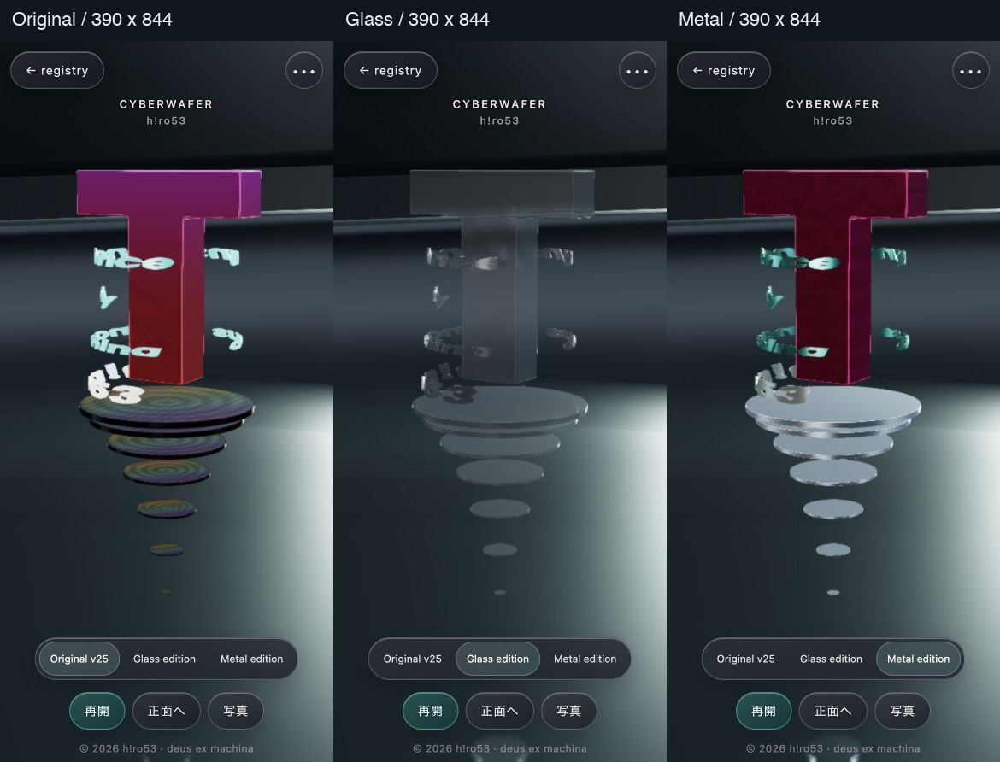
原典のグラデーションと虹色格子を復元。原典のグリッド背景、低解像度化、走査線は対象外。
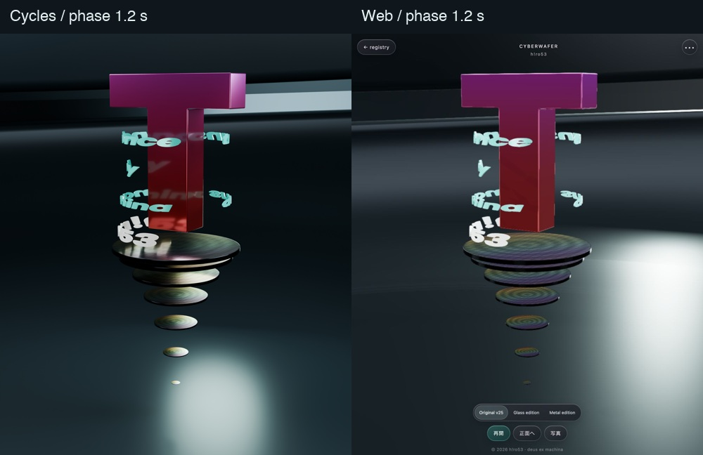
Webは12／16面の深度分離と屈折近似。Cyclesより暗く、粗面散乱や重なりの見え方に差があります。
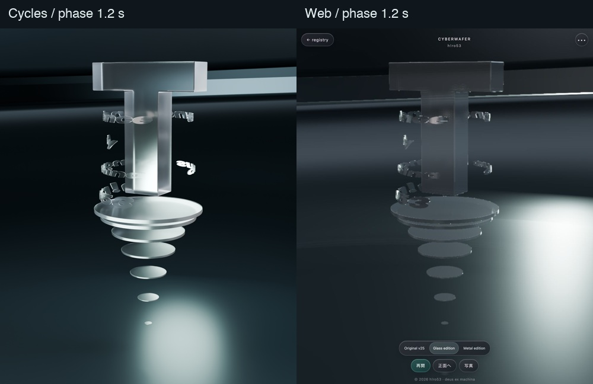
文字の全スロットを金属化。強い発光による金属感の消失を避けました。
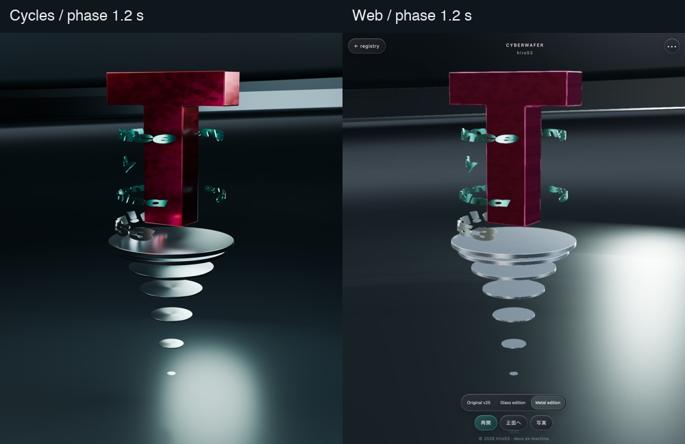
診断用に他の主役部品を非表示。空間・照明は維持。上端と下端の反射は実際の厚みによるものです。
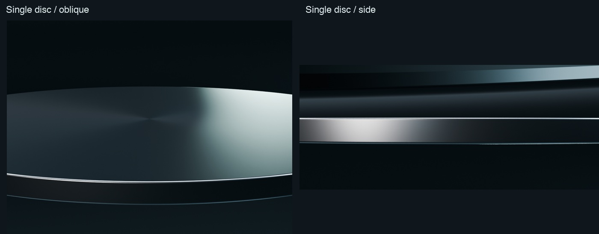
単一閉曲面・Euler数2・非多様体辺0・材質スロット1。厚み0.07、フィレット0.006。
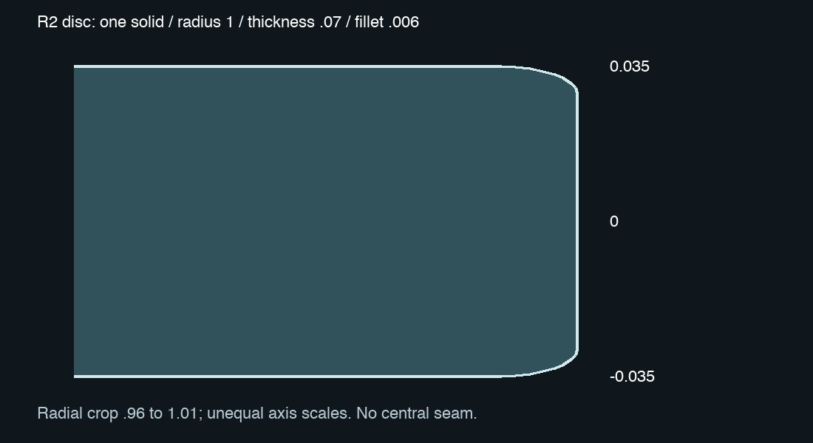
R1の軽い内外角丸みを維持。Bevelは重ねていません。
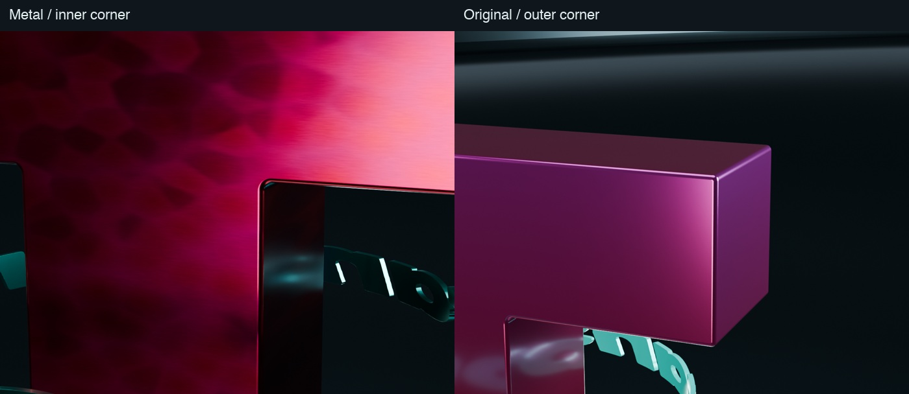
T、文字の側面を含む全面、複数円盤の透過。近接用カメラのみ変更しています。
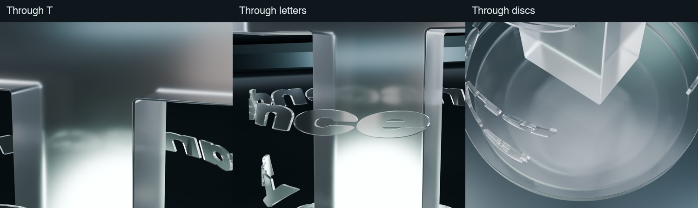
同じ形状・材質・視点・256 samples。細い縁は保持されていますが、粗面の微小ノイズは平滑化されます。
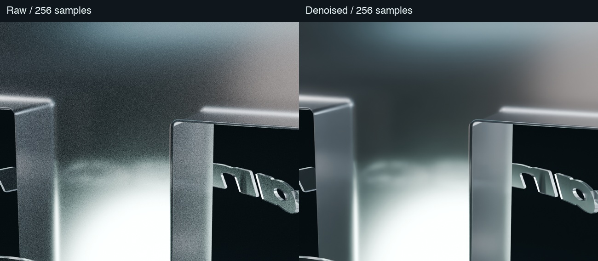
元画像の色分布と矩形格子を表面へ対応。薄膜による角度応答を追加し、深い格子溝にはしていません。
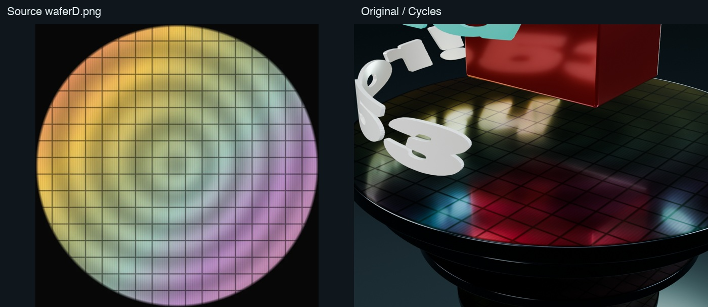
4枚の元画像。R1で整理した輪郭・円筒写像を保持し、3版共通形状として使用。通常フォントへの置換なし。
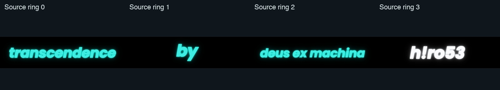
R1・旧公開版・Cyberwafer v25と作品一覧は保持しています。iPhone／Safari実機、OSの実全画面、実タッチのピンチは未検証です。検査範囲とWeb近似の限界は同梱記録に明記しています。